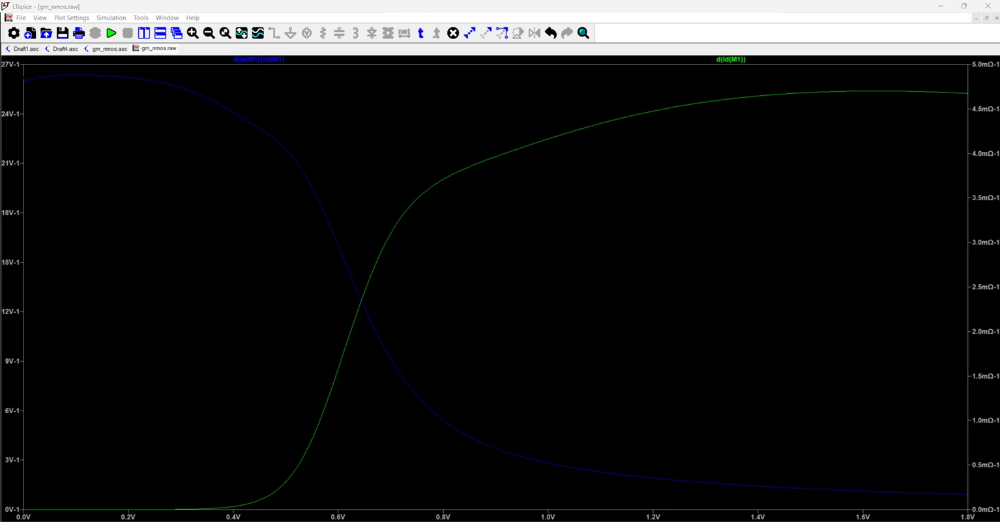
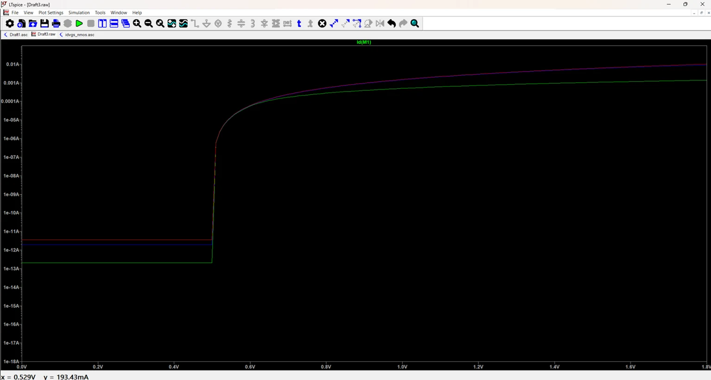
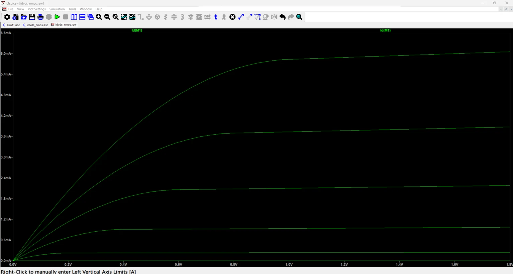
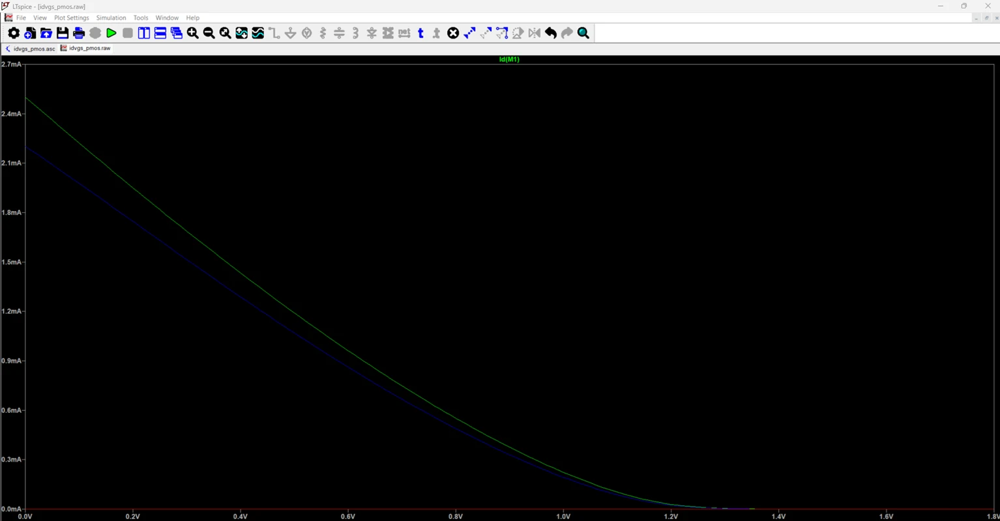
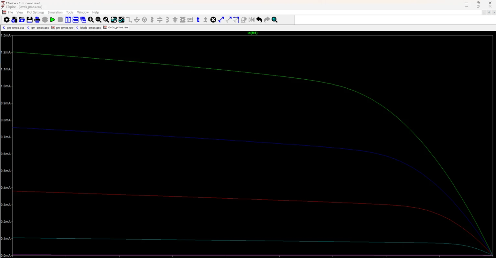
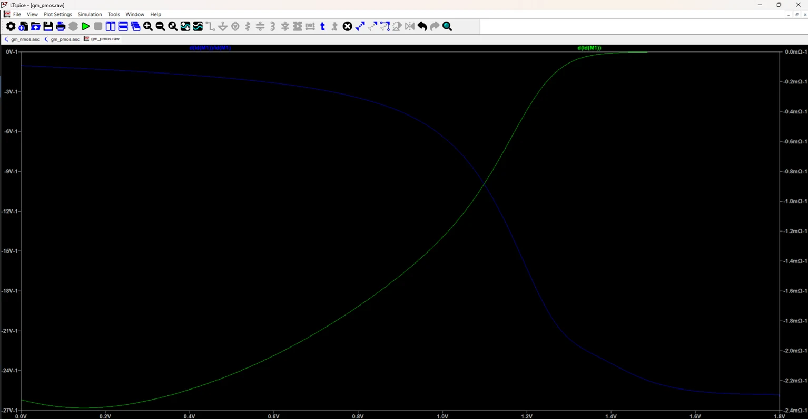

Device Characterization
MOSFET Characterization and gm/Id Analysis
LTspice 26 · TSMC 180 nm BSIM3v3 · W = 10 µm, L = 0.18 µm · 1.8 V supply
Systematic DC sweeps of a 10 µm / 0.18 µm NMOS and PMOS, with the operating-point extracted at a stated bias. The results feed the usual analog sizing decisions: where gm/Id says the device is in weak vs strong inversion, and what intrinsic gain a single stage can offer.

Key parameters
| Parameter | NMOS | PMOS |
|---|---|---|
| Threshold voltage | ≈ 0.35 V | ≈ −0.42 V |
| Bias | Vgs = 0.9 V, Vds = 0.9 V | Vgs = 0.9 V, Vds = 0.9 V |
| Overdrive | ≈ 0.55 V | ≈ 0.48 V |
| Id | ≈ 1.07 mA | not reported |
| gm | ≈ 4.0 mA/V | ≈ 2.2 mA/V |
| gm/Id | ≈ 3.79 V⁻¹ | ≈ 4.5 V⁻¹ |
| ro | ≈ 2.86 kΩ | not reported |
| gm·ro | ≈ 11.4 V/V | not reported |
NMOS
Id–Vgs in linear and log scale shows the turn-on near 0.35 V; the Id–Vds family shows the saturation knee moving right as Vgs rises. gm/Id peaks in weak inversion and falls as the device moves into strong inversion: high gm/Id favors low power and noise, low gm/Id favors speed.


PMOS
The PMOS mirrors the NMOS characteristics with lower hole mobility, so it needs roughly 1.8× the width for similar gm (here peak gm ≈ 2.2 mA/V against ≈ 4.0 mA/V for the NMOS).



Scope and limitations
- Single geometry (W = 10 µm, L = 0.18 µm) at minimum length; gm/Id and gain are not swept across L.
- PMOS operating-point values for Id, ro and gain were not recorded.
- Model-level simulation only; results depend on the supplied BSIM3 model and LTspice settings.